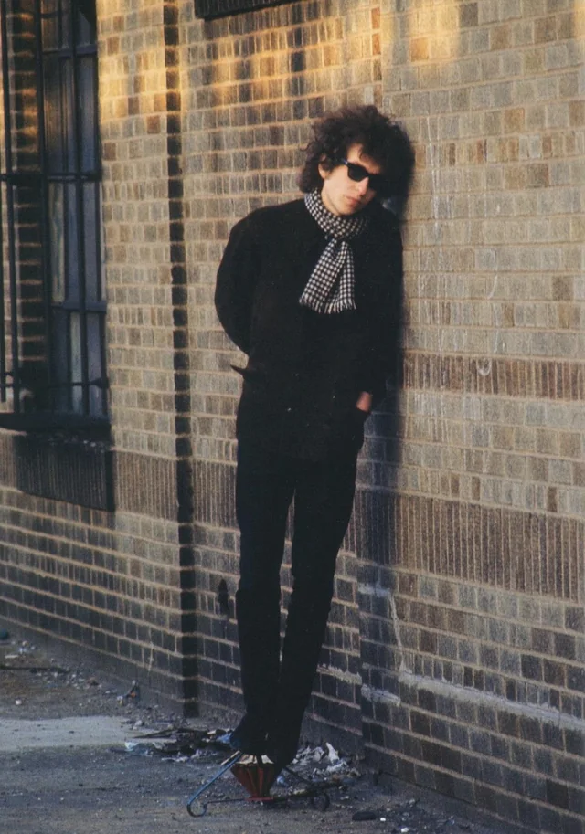

your saintlike face and your ghostlike soul...(last updated Nov 11)
- jet pilot (side tracks)
- you're a big girl now, take 2
- up to me, take 2
- it takes a lot to laugh, it takes a train to cry
- sad-eyed lady of the lowlands
spotify link to list.